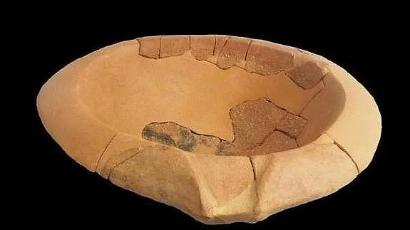
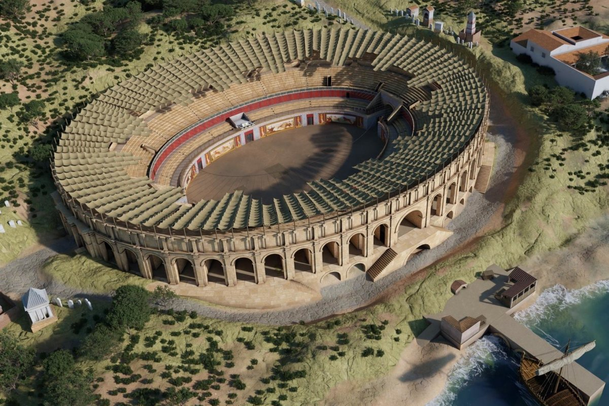

El ingrediente más antiguo de nuestra mesa
Una salsa hecha en el mortero, con queso, ajo, hierbas y aceite de oliva. Ingredientes humildes, técnica elemental, resultado que ha perdurado más de dos mil años. El moretum es una de las preparaciones culinarias romanas mejor documentadas y, para quienes vivimos en el Camp de Tarragona, tiene un significado adicional: era un plato presente en Tarraco, la capital de la Hispania Citerior.
No es una receta de banquete. No es sofisticación imperial. Es lo contrario: la comida de quien madruga, de quien trabaja la tierra, de quien lleva el rebaño. Y precisamente por eso ha sobrevivido cuando muchos platos de lujo han desaparecido. La sencillez tiene esa virtud.
El nombre viene del mortero
La raíz de la salsa es griega —donde se conocía como myttotós— pero fueron los romanos quienes la popularizaron y la bautizaron con el nombre que conocemos: moretum, que hace referencia directa al instrumento para prepararla, el mortero. Aparece en varias fuentes clásicas: el De Re Rustica de Columela y el famoso poema del Appendix Vergiliana, atribuido a Virgilio, que lleva precisamente el título de Moretum.
Otros autores también la recogen: Catón, Ovidio, Apicio. Ningún plato con tan pocos ingredientes ha generado tanta literatura. Algo nos dice eso sobre su importancia real en la vida cotidiana romana.
«Machaca en el mortero el ajo con sal gruesa, añade las hierbas, el queso viejo, trabájalo en círculos mientras viertes el aceite, acidifica con vinagre. Que quede denso.»
Appendix Vergiliana, siglo I a.C.No era comida de patricios
El moretum era la comida de pastores y campesinos, probablemente como receta de aprovechamiento: trozos de queso viejo que se habían ido poniendo duros, ajo que sobraba, las hierbas que crecían alrededor. Con ingredientes de sabor fuerte como el ajo y el queso añejo, no era un plato propio de las refinadas mesas de los patricios.
Y eso lo hace más interesante, no menos. No es la cocina del poder. Es la cocina real. La que se repite cada mañana, la que viaja con quien trabaja, la que no necesita ceremonial para justificarse.


El moretum — salsa de queso, ajo y hierbas preparada en el mortero, tal como se hacía en Tarraco hace dos mil años
Dos mil años en nuestra ciudad
Aquí la salsa deja de ser una curiosidad abstracta. El moretum estaba presente en los banquetes gastronómicos que reproducían la cocina de la Tarraco romana, donde se incluía como uno de los aperitivos de un menú que recreaba los sabores de la capital de la Hispania Citerior.
Cuando comemos una salsa de queso con hierbas y ajo en el Camp de Tarragona, estamos repitiendo un gesto de hace dos mil años. No es metáfora. Es literalmente el mismo plato, los mismos ingredientes, el mismo instrumento.

Del moretum al almogrote
En la Península Ibérica, durante la Edad Media, la salsa siguió viva bajo los nombres de almadroc o almodrote: palabras de origen mozárabe, probablemente evolucionadas del latín moretum cruzado con el árabe madrus.
Hoy sobrevive especialmente en Extremadura y en las Islas Canarias, donde el almogrote es una pasta de queso curado, ajo, aceite y pimentón que se unta sobre pan. Si lo pruebas y te parece conocido, es porque lo es: llevas dos mil años comiéndolo.
Moretum virgiliano
Receta adaptada · Para 4 personesIngredientes
Preparación
La ruda es amarga y puede ser difícil de encontrar. Se puede sustituir por rúcula, menta o tomillo. Si el queso es muy fresco y húmedo, escúrrelo antes. El resultado debe tener la consistencia de un paté ligero.
Una receta que Virgilio puso en verso, que los legionarios llevaron hasta los confines del Imperio, y que en Tarraco —nuestra Tarraco— ya se preparaba mucho antes de que nadie pensara en inventar el pesto.
El garum: la salsa que conquistó Roma y se fabricaba en Tarraco
El condimento universal de la antigua Roma. Pescado fermentado, umami puro y una industria exportadora que operaba a orillas de nuestro mar.
Leer el artículo →Gourmets de Tarragona · Curiosidades gastronómicas